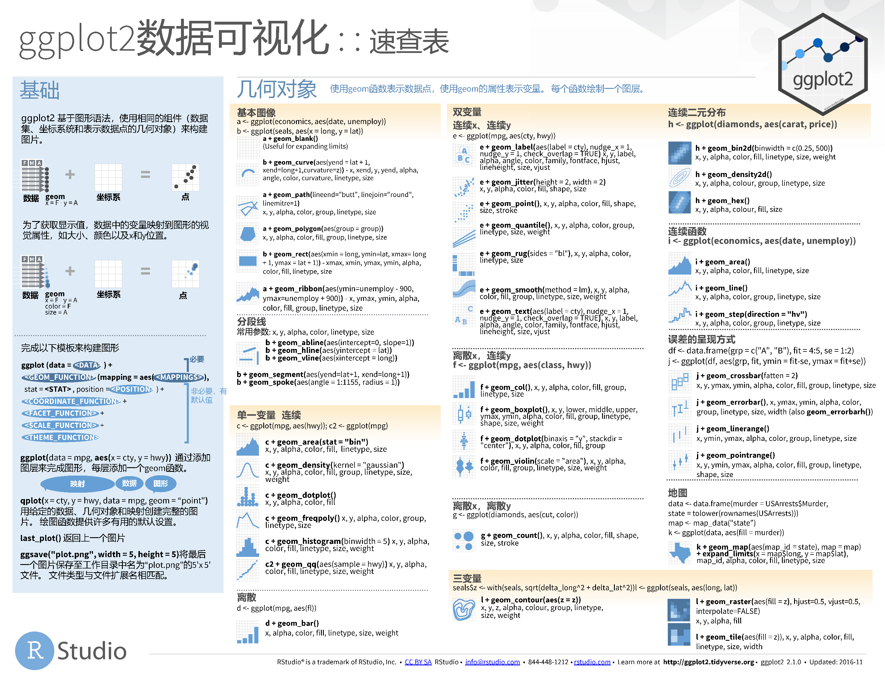
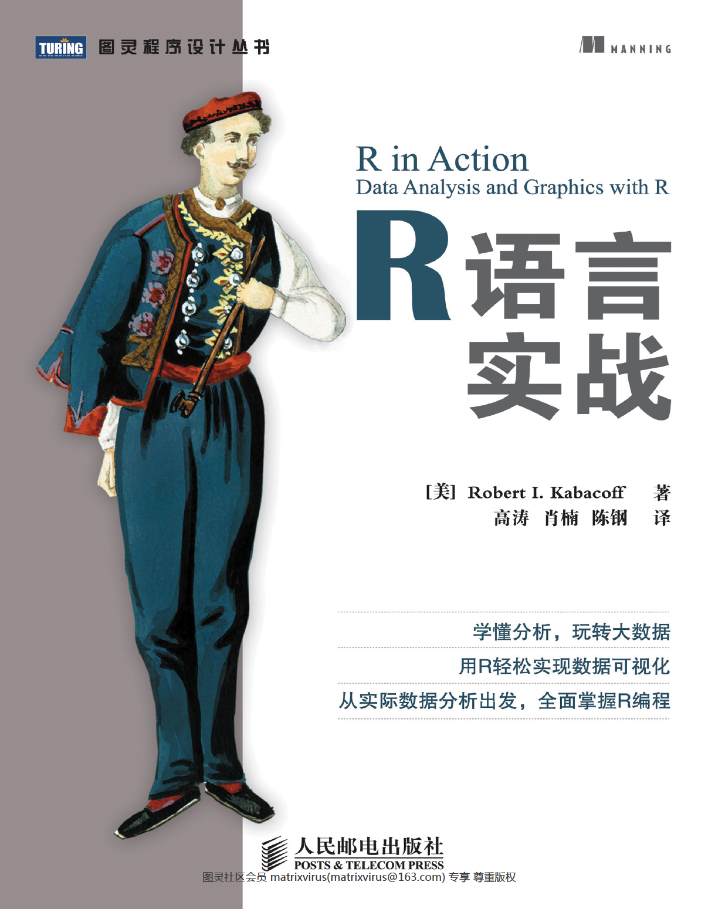
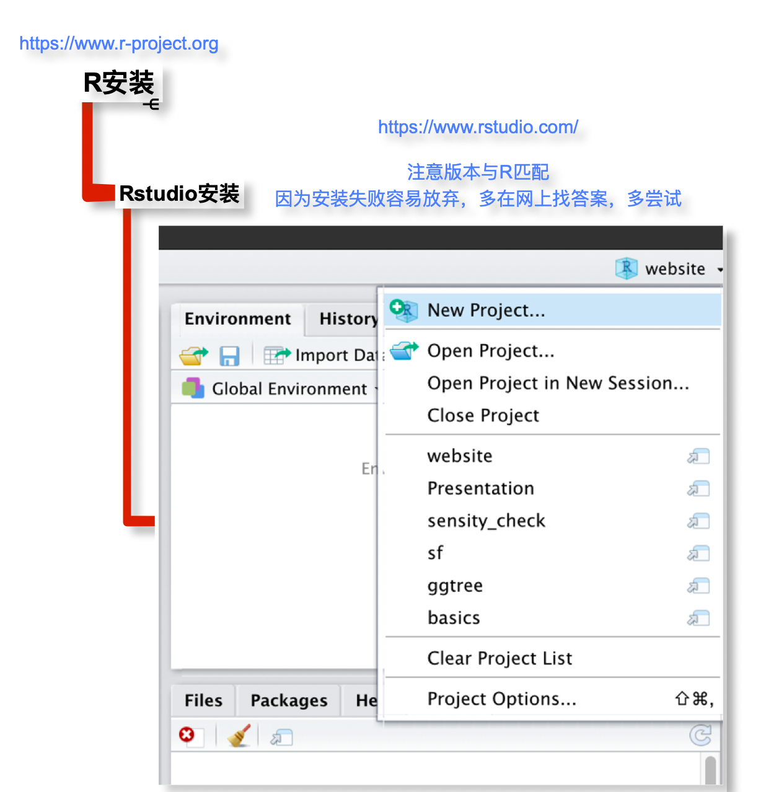
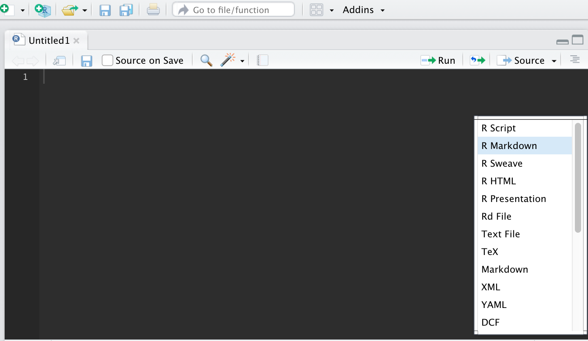
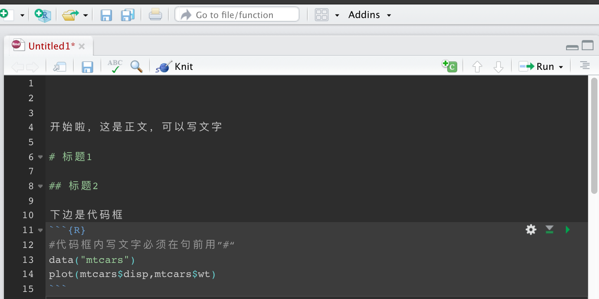

1.Why
1.1开源：相当于手机系统，可以使用任何在此平台上开发的软件，叫做包（package）

packages number
1.2 无所不能的分析及可视化工具，一些可视化例子，浏览以便于激发灵感


桑基图

冲积图

相关性

聚类图

曲线图

map

waterfall

使用R出图，AI加工图
1.3更大魅力在于对数据的自由探索
1.4丰富的功能：word、pdf、ppt、html、blog等
2.How
Q1:怎么学的更快？
带着需求来学习，学以致用
Q2:小白怎么入手？
安装、基础操作：教程，《R语言实战》相当于查询手册
Q3:遇到问题怎么办？
（1）先从教程（查询手册）中找答案，再去百度、谷歌（推荐），再交流、总结、分享
（2）真想学好还是建议翻墙，巨量优质的教程分享

速查表
3.我的数据可以用哪些方法分析？-多元统计
逃不出多元统计分析，去看学习强国的多元统计分析课程。
3.1变量
自变量：多元相关cor、主成分分析OCA、因子分析CA
自变量与因变量：多元回归、线性模型（广义glm、一般（方差分析）、普通、线性混合效应模型lme）、冗余分析RDA

线性混合效应模型
尤其适用于以下情况：
- 数据有缺失值；
- 不平衡设计，如一个处理3个样本，另一个5个样本；
- 结构化（nested）数据；
- 结果变量非连续，比如评分（5，10，15）；
- 等等。。
3.2样本
- 聚类分析
3.3样本与变量
样本与自变量：对应分析（CA）
样本、自变量与因变量：约束性对应分析（CCA）
5.预测模型
随机森林、神经网络、支持向量机等，大量数据的训练，caret包

随机森林预测

变量重要性排序

建模流程
6.Workflow
一切围绕《R语言实战》查询

R语言实战
6.1 软件安装

1
6.1 新建项目

2
6.2 使用RMarkdown

3
6.3 数据处理
6.3.1 导入数据
#install.packages("readxl")
library(readxl)
cardata <- read_excel("/Users/profits/Rdata/website/cardata.xlsx")
head(cardata)## # A tibble: 6 x 12
## Cartype mpg cyl disp hp drat wt qsec vs am gear carb
## <chr> <dbl> <dbl> <dbl> <dbl> <dbl> <dbl> <dbl> <dbl> <dbl> <dbl> <dbl>
## 1 Mazda RX4 21 6 160 110 3.9 2.62 16.5 0 1 4 4
## 2 Mazda RX4 W… 21 6 160 110 3.9 2.88 17.0 0 1 4 4
## 3 Datsun 710 22.8 4 108 93 3.85 2.32 18.6 1 1 4 1
## 4 Hornet 4 Dr… 21.4 6 258 110 3.08 3.22 19.4 1 0 3 1
## 5 Hornet Spor… 18.7 8 360 175 3.15 3.44 17.0 0 0 3 2
## 6 Valiant 18.1 6 225 105 2.76 3.46 20.2 1 0 3 16.3.3 筛选数据
筛选disp高于120，VS=1的数据
library(dplyr)
cardata_filter<-cardata%>%filter(disp>120,vs==1)
cardata_filter## # A tibble: 8 x 12
## Cartype mpg cyl disp hp drat wt qsec vs am gear carb
## <chr> <dbl> <dbl> <dbl> <dbl> <dbl> <dbl> <dbl> <dbl> <dbl> <dbl> <dbl>
## 1 Hornet 4 Dr… 21.4 6 258 110 3.08 3.22 19.4 1 0 3 1
## 2 Valiant 18.1 6 225 105 2.76 3.46 20.2 1 0 3 1
## 3 Merc 240D 24.4 4 147. 62 3.69 3.19 20 1 0 4 2
## 4 Merc 230 22.8 4 141. 95 3.92 3.15 22.9 1 0 4 2
## 5 Merc 280 19.2 6 168. 123 3.92 3.44 18.3 1 0 4 4
## 6 Merc 280C 17.8 6 168. 123 3.92 3.44 18.9 1 0 4 4
## 7 Toyota Coro… 21.5 4 120. 97 3.7 2.46 20.0 1 0 3 1
## 8 Volvo 142E 21.4 4 121 109 4.11 2.78 18.6 1 1 4 2选取变量mpg和cyl
cardata_select<-cardata%>%select(mpg,cyl)
cardata_select## # A tibble: 32 x 2
## mpg cyl
## <dbl> <dbl>
## 1 21 6
## 2 21 6
## 3 22.8 4
## 4 21.4 6
## 5 18.7 8
## 6 18.1 6
## 7 14.3 8
## 8 24.4 4
## 9 22.8 4
## 10 19.2 6
## # … with 22 more rows6.3.4 数据展示
散点图
library(ggplot2)
ggplot(cardata,aes(x=cyl,y=mpg))+geom_point()
柱状图
ggplot(cardata,aes(x=cyl,y=mpg))+geom_col()
箱式图
ggplot(cardata,aes(x=cyl,y=mpg))+geom_boxplot()
小提琴图
ggplot(cardata,aes(x=cyl,y=mpg))+geom_violin()
6.3.5 数据分析
#anova
cardata$cyl<-as.factor(cardata$cyl)
anova_fit<-aov(cardata$mpg~cardata$cyl)
summary(anova_fit)## Df Sum Sq Mean Sq F value Pr(>F)
## cardata$cyl 2 824.8 412.4 39.7 4.98e-09 ***
## Residuals 29 301.3 10.4
## ---
## Signif. codes: 0 '***' 0.001 '**' 0.01 '*' 0.05 '.' 0.1 ' ' 1#lm_fit
lm_fit<-lm(mpg~cyl,cardata)
summary.aov(lm_fit)## Df Sum Sq Mean Sq F value Pr(>F)
## cyl 2 824.8 412.4 39.7 4.98e-09 ***
## Residuals 29 301.3 10.4
## ---
## Signif. codes: 0 '***' 0.001 '**' 0.01 '*' 0.05 '.' 0.1 ' ' 1